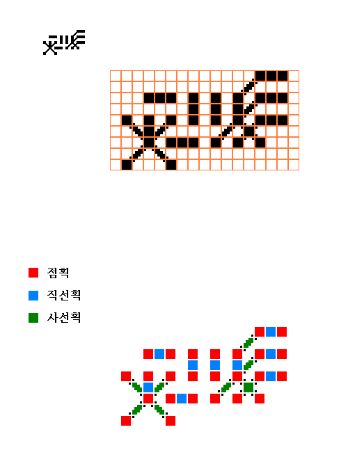

[0.8.1]
빈글과 자동인식 - 2¶
빈글문자의 직선적인 특징은 광학적 문자인식(OCR)에 유리하다. QR코드나 2차원 바코드처럼 비트 단위로 데이타를 저장하기 위해 일정한 크기로 나누어진 셀이 곧 빈글 문자의 획이 된다. 따라서 이미지로 부터 원래의 데이타를 쉽게 얻을 수 있다. 실시간으로 사물을 빠르게 구별해야 하는 AR(증강현실)에서 이러한 장점은 더욱 부각될 것이다.
{kind=link}
다음은 증강현실에서 자주 사용되는 AR마커이다. 각 마커를 인식하고 방향과 위치를 추적하여 가상의 물체를 보여준다.

증강현실에서 가상적인 사물의 위치를 표시하는 AR마커는 보통 정사각형 안에 격자형 셀을 설정된 값에 따라 흑백이 다른 체크패턴으로 되어있다. 사각형 격자로 나누어진 셀은 많은 데이타를 밀집시키기에 적합하고 또한 마커에 담긴 값을 쉽게 추출할 수 있다. AR마커와 비슷한 형태의 문자를 사용한다면 자동인식 장치에게는 더욱 정확도와 인식률을 높일 수 있지만 사람들에게는 문자사용과 해독의 어려움을 증대시킬 것이다.
빈글은 형태적으로 체크패턴형의 마커와 유사한 면이 있다. 또한 기계적인 인식에서 유리하도록 폰트를 사용하지 않는다. 빈글 편집기로 만들어진 SVG 벡터 이미지로 빈글 문자를 프린트하여 사용하기 때문에 빈글문자는 일률적인 형태를 가진다. 그러면서 동시에 빈글은 사람들의 사용할 수 있는 정도의 친숙한 형태의 문자를 목표로 삼는 실험적인 언어이다.
다음의 이미지에서 빈글문자를 추출하는 과정을 살펴보자.
{kind=link}
스캐너를 사용하면 좋겠지만 시각으로 감각되어 나타나는 일상공간의 사물, 도형이나 마크들은 원근감에 의해서 기울어지고 경사진다. 그래서 위 원본 이미지를 최대한 원근감을 가지도록 옆에서 비스듬하게 사진을 찍었다.
이 사진에서 빈글이라 짐작되는 곳을 추정하기 위해 먼저 사진이 흑백이 되도록하고 색상을 반전시킨 후 백색 픽셀을 확장시켜 문자들이 덩어리를 이루도록 하고 덩어리 마다 박스로 위치를 잡는다. 아래 사진에서 세 개의 덩이리가 박스로 그려진 것을 볼 수 있다.
보통 하나 이상의 박스가 잡히기 때문에 그 중에서 빈글문자인 것을 가려내야 한다. 빈글문자는 획의 두께와 간격이 거의 동일하다는 특징이 있다. 따라서 이미지를 흑백으로 전환하면 흑백의 비율이 어느 정도에서 일정하기 때문에 백색 픽셀을 확장시키거나 수축시켜서 대략적으로 획의 두께와 간격을 구할 수 있다. 또한 빈글문자로 판단할 수 있는 여러가지 조건이 있다. 흑백의 비율이 맞지 않는 등 조건에 맞지않는 박스들은 제외하고 빈글이라고 추측되는 선택된 박스를 빨간색으로 표시한다.
선택된 박스의 빈글문자들은 원근으로 인해 수직과 수평이 모두 기울어져 있다. 이를 바로잡는 방법은 이미지를 Rotate, Skew, Perspective 등 이미지 변형 함수로 일정 각도씩 단계적으로 변형시키면서 수평이 맞는지 체크하여 수평과 수직을 맞춘다.
수평과 수직이 맞추어진 이미지에서 그 다음 단계는 빈글문자의 획의 정확한 두께와 간격을 구하는 것이다. x축, y축을 기준으로 이미지의 백색 픽셀의 변화도 그래프에서 일정 간격으로 피크를 이루는 위치들을 구하면 된다.
그 피크를 이루는 지점마다 라인을 그리면 획들 사이에 거의 비슷한 크기의 간격으로 가로 세로 격자를 이루게 된다. 격자에서 선이 빠진 곳을 채워서 완전한 그리드를 구성해야 한다.
그 다음은 이미지의 문자열에서 한 개의 문자씩 나누어서 읽어들이는 과정이다. 흑백이미지로 윤곽선을 구하고 동일한 영역에 위치한 윤곽선들을 하나의 박스로 묶는다. 그리고 각 박스 별로 그리드 셀들의 흑백의 비중에 따라 비트값을 문자의 점획, 직선획, 사선획으로 읽어들여 문자코드를 구하게 된다.
다음편에 이어서 ...
( 첨부파일은 영문 빈글요약본입니다. 한형준님이 영문 번역해 주셨습니다. )